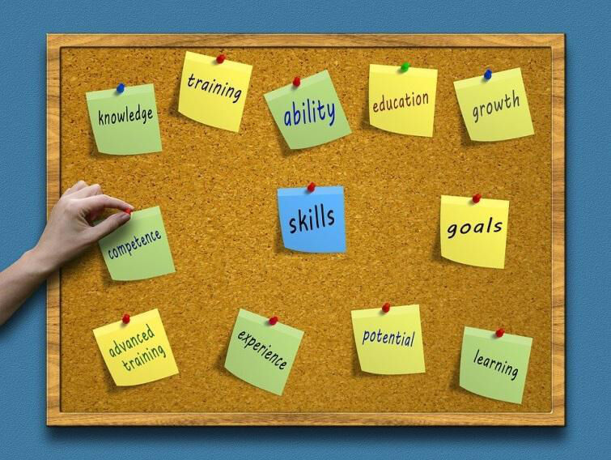

Trainees Edition
Trainers Edition
Trainees Edition
Trainers Edition
18. nodaļa:Vadlīnijas psniedzējiem
Ievads
Šī nodaļa palīdzēs pasniedzējiem izstrādāt, īstenot un novērtēt nodarbības (1.–16.) par dažādiem ziņu pratības aspektiem. Materiāli ietver 16 dažādas tēmas, kas iedalīti trīs satura daļās:
- 1. daļa: Izpratne par jaunumiem (pamatinformācija); nodaļas 1.-8.
- 2. daļa. Mediju žurnālistika; nodaļas 9.–11.
- 3. daļa: Kritiskā domāšana par ziņām (kā kritiski lietot ziņas); nodaļas 12.-16.
Šo materiālu var izmantot pieredzējuši pedagogi un citi profesionāļi, kuri jau māca par ziņu pratību, kā arī tie, kuriem ir mazāka pedagoģiskā pieredze un kurus interesē semināru un/vai apmācību kursu vadīšana pieaugušajiem par ziņu pratību. Mācību materiāli ir plaši un daudzveidīgi. Katrai tēmai atvēlēta atsevišķa nodaļa, un to var mācīt neatkarīgi no citām tēmām. Tajā ir ietverti mērķi, mācību rezultāti un ieteikumi apmācības strukturēšanai, kā arī ieteikumi dažām mācīšanas un mācīšanās aktivitātēm. Šo vadlīniju psniedzējiem uzdevumi ir:
- parādīt dažas pieaugušo izglītojamo īpašības;
- parādīt dažādas pasniedzēju lomas;
- piedāvāt mācību metodes un paņēmienus, ko izmantot, mācot ziņu pratību;
- vadīt pasniedzējus mācību sesiju sagatavošanā, nodrošinot stundu plāna struktūru.
Saturs: Vadlinijas pasniedzējiem
Pieaugušo izglītojamo raksturojums
Materiāls ir paredzēts dažādām pieaugušo grupām, un tā mērķis ir uzlabot ziņu lasītprasmi un kritiskās domāšanas prasmes. Pieaugušie izglītojamie mācās dažādu iemeslu dēļ, un, to darot, parasti apgūst noteiktu prasmju kopumu. Daži pieaugušie izglītojamie mācās, lai pabeigtu izglītības programmu, kuru viņi uzsākuši un nav pabeiguši jaunībā vai pusaudža gados. Viņi mācās, lai tiktu paaugstināti darbā, saglabātu savu darba vietu vai iegūtu darbu. Viņi mācās, lai mainītu savu karjeru. Viņi mācās, lai iegūtu nepieciešamās zināšanas brīvajā laikā, nodarbojoties ar saviem vaļaspriekiem, ceļojot. Viņi mācās, lai sekotu prasībām saistībā ar izmaiņām ikdienas dzīvē, ko rada sabiedrības digitalizācija u.c.
Tikpat dažādi kā mācīšanās iemesli ir arī izglītojamo īpašības. Pieaugušie izglītojamie atšķiras pēc vecuma, dzimuma, izglītības līmeņa, sociālekonomiskā statusa, nodarbinātības statusa, interesēm, uzskatiem, garīgajām spējām, motivācijas līmeņa mācīties u.c. Viņi pilda dažādas dzīves lomas: vecāki, darbinieki, bērni, draugi, partneri, kolēģi, pilsoņi. Viņu ziņu pratības vajadzības 30 gadu vecumā atšķiras no ziņu pratības vajadzībām 50 vai 65 gadu vecumā un ir atkarīgas no dažādiem iepriekš minētajiem faktoriem. Tāpēc katram pasniedzējam, kas strādā ar pieaugušajiem izglītojamajiem, ir ļoti svarīgi ņemt vērā patiesi daudzveidīgo pieaugušo izglītojamo vajadzību spektru.
Pēc Malkolma Noulza (Malcolm Knowles) domām pieaugušajiem izglītojamajiem ir nepieciešama pašapliecināšanās un individuāla mācīšanās. Turklāt pieaugušie pieprasa viņu statusa atzīšanu. Pētījumi par pieaugušo izglītību izceļ pieredzes metodi (Hardy, 2005), ar kuras palīdzību viņi var vislabāk asimilēt mācītās zināšanas. Pieaugušie veido saistības starp jēdzieniem, nevis iegaumējot vai mācoties strukturēti, bet gan atsaucoties uz pieredzes kontekstu. Tādējādi tiek radītas subjektīvas idejas, pieņēmumi un viedokļi par mācību programmu, kas var uzlabot mācību metodi un uzlabot sniegto saturu.
Gados vecāki pieaugušie ir aktīvāki mācīšanās situācijās, kurās viņiem nav šaubu un raižu par savām mācīšanās spējām, un viņi ir motivētāki un aktīvāki, veicot uzdevumus, kurus savā ikdienas dzīvē uzskata par svarīgiem, noderīgiem un nozīmīgiem. Tāpēc izglītības metožu izvēle ir saistīta ar mācīšanās jēdzienu: mācīšanās kā sevis transformācija, mācīšanās kā labāka dzīves izpratne, mācīšanās kā personīgās jēgas meklēšana, mācīšanās kā informācijas uzkrāšana vēlākai lietošanai (Dr.Radovan M. (2019. gada oktobris); 6. slaids).
Daudzi pasniedzēji sagaida, ka viņu apmācāmie uzvedīsies kā "nobrieduši cilvēki". Un, ja notiek neatbilstoša uzvedība, tā var ātri kļūt par nosodījuma vai pat apvainojuma objektu. Lielāko daļu laika problēma ir pasniedzēja domāšanā ("Viņi" nav bērni, viņi to izlasīs paši!"), kas atspoguļojas viņu attieksmē pret mācīšanu. Efektīvs pedagogs apzinās, ka viņam ir arī audzinātāja, ne tikai informācijas sūtņa loma (Morano) M. (2013. gada augusts), 5. lpp.).
Pieaugušo mācīšanās spējas
Pasniedzēju profesijā jau sen pieņemts, ka "mācīšanās spējas palielinās līdz 20 gadu vecumam, tad uz dažiem gadiem apstājas un pēc tam samazinās" (Jelenc, Sabina 1996: 21). Atklājumi par smadzeņu darbību to noliedz, lai gan ar vecumu tiešām pasliktinās sajūtas (redze, dzirde), ātrums (fiziskā un intelektuālā reakcija) un fiziskais spēks (bet ne intelektuālais spēks). Pieaugušo mācīšanās spējas galvenokārt ir atkarīgas no viņu garīgās aktivitātes. Vesels pieaugušais, kas vienmēr ir garīgi aktīvs, var lēnāk apgūt saturu, par kuru nav pieredzes, vai kas ļoti atšķiras no paša pieredzes, bet atcerēsies to tikpat labi kā jaunietis. Tomēr pieaugušie atceras saturu, kas atbilst viņu pieredzei, pat ātrāk nekā jaunieši. Ņemot vērā, ka pieaugušie mēdz būt emocionāli stabilāki nekā jaunieši (ļauj labāk koncentrēties uz saturu) un pacietīgāki (ļauj būt neatlaidīgākiem mācību mērķu sasniegšanā), apmācību nodrošinātājiem nevajadzētu uztraukties. Efektīvs pasniedzējs ļauj audzēkņiem saistīt saturu ar savu pieredzi un saskatīt atbilstību viņu pašu dzīvei un darbam (Morano M. (2013. gada augusts), 6. lpp.).
Mācību plānošana par ziņu pratību

Šajā projektā sagatavotie mācību materiāli ir bagātīgi un plaši. Kādu apmācību satura daļu pasniedzējam izmantot – visas nodaļasvai tikai atsevišķas? Pēc kādiem kritērijiem izvēlēties mācību materiālus semināra, nodarbības vai garāka kursa vadīšanai par ziņu pratību?
Pieņemot lēmumu, kādu saturu izmantot, sagatavojām dažus jautājumus pasniedzējam, lai palīdzētu izvēlēties:
- Kas ir mani apmācāmie un kādas ir viņu īpašības (vecums, izglītības līmenis, nodarbinātības statuss, sociālie apstākļi, motivācija piedalīties apmācībās utt.)?
Padoms. Mēģiniet savākt pēc iespējas vairāk informācijas par saviem studentiem, lai varētu pienācīgi sagatavoties. Jūs varat lūgt apmācību organizētāju sniegt jums datus, varat sagatavot īsu tiešsaistes anketu un nosūtīt to studentiem pirms apmācību sākuma.
- Kādas ir galvenās nepilnības izglītojamo zināšanās?
Padoms. Vienkāršs veids, kā pārbaudīt apmācāmo esošās zināšanas, ir sagatavot īsu tiešsaistes (paš)novērtējuma testu par saturu, kuru gatavojaties mācīt, un apkopot apmācāmo atbildes, gatavojoties apmācībām.
- Cik daudz laika ir pieejams apmācībām?
Padoms: esiet reālistisks. Ja gatavojaties četru stundu semināram, pārliecinieties, ka neņemat pārāk daudz satura un veltiet visu apmācību lekciju lasīšanai. Pārliecinieties, ka neatkarīgi no apmācību ilguma jūs sagatavojat aktivitātes, kas ir svarīgas studentiem un kuras viņi var saistīt ar savu pieredzi.
- Kāds ir nodarbības veids: klātiene, tiešsaiste vai jauktais?
Padoms. Nodarbības veidam ir liela ietekme uz pasniegšanu, un katram ir sava specifika. Noteikti pielāgojiet aktivitātes atbilstoši izvēlētajam veidam. Ja veicat apmācību tiešsaistē, padomājiet par to, kā saglabāt motivāciju, kad gatavojaties veikt pārtraukumus, kā nodrošināt, lai dalībnieki būtu aktīvi (piemēram, sadaliet viņus atsevišķās tiešsaistes telpās, lai strādātu grupās vai pāros). Apmācības klātienē gadījumā pārbaudiet, cik liela ir mācību telpa un kāds aprīkojums tai ir?
- Kā es varu zināt, vai apmācāmie ir sasnieguši mācību mērķus?
Padoms. Ir vairāki veidi, kā iegūt atsauksmes no studentiem. Var sagatavot īsu novērtējuma veidlapu, izglītojamo pašnovērtējuma veidlapu, viktorīnu vai citu.
Ilgums
Apmācības ilgumam jāatbilst apmācāmo vajadzībām, mācību mērķiem un pieejamajam laikam. Treneri var sagatavot un īstenot dažāda veida apmācības:
- 1 dienas semināri par konkrētu tēmu;
- seminārs;
- garāks kurss.
Pasniedzējs un mācību process
Pasniedzēji ir dažādu mācību priekšmetu skolotāji, bibliotekāri, pedagogi valsts pieaugušo izglītības centros, trešā vecuma universitātēs, personas bez formālās pedagoģiskās izglītības, kas vada seminārus NVO u.c.
"Izturieties pret cilvēkiem tā, it kā viņi jau būtu tādi, kādiem viņiem vajadzētu būt, un jūs palīdzat viņiem kļūt par tādiem".
Johann Wolfgang Goethe
Mūsdienu izglītības pasniedzējs zina, ka nevar nevienam neko iemācīt, bet var tikai palīdzēt mācīties. Tāpēc personīgā sagatavošanās mācīšanai balstās uz misiju: "es palīdzu cilvēkiem mācīties un mācos, to darot." Mūsdienu pedagogs neapgrūtinās ar pārāk daudz mācību grāmatā un mācību programmā ietverto materiālu, jo viņš zina, ka ar pareizu sagatavošanos mācīšanai un piemērotu mācību procesa vadīšanas veidu, viņš mudinās apgūt materiālu patstāvīgi. Jēdziena 'pieaugušais' skaidrojumā jau redzējām, ka arī pieaugušajiem ir nepieciešams pasniedzējs, jo nobriešanas process notiek visu mūžu. Protams, tas vairāk attiecas uz ilgākām izglītības formām, taču pat vienas dienas apmācībās var raisīt izmaiņas dalībnieku uzvedībā (Morano M. (2013. gada augusts), 16. lpp.).
Pasniedzējs kā informācijas sūtnis
Informācijas pārraidīšana ir viena no pamata komunikācijas prasmēm, ko var izmantot gan īsā skaidrojumā vai precizēšanā, gan garākā lekcijā. Lai efektīvi pārraidītu informāciju, ir ļoti svarīgi ievērot šādus principus (Marentič Požarnik B., p. 244):
- Skaidrība, saprotamība (paskaidrot mērķi un struktūru, t.i. ievadu, kodolu, noslēgumu; atsaukties uz priekšzināšanām un pieredzi, sniegt labus piemērus, izmantot vizuālos materiālus);
- Emocionāla iesaistīšanās (parādīt personisku pieredzi, spilgtus tēlus, saikni ar esošajām interesēm);
- Dalībnieku mentālā aktivizēšana (problēmās balstītīti piemēri, starpjautājumi pārdomām);
- Verbālās un neverbālās komunikācijas saskaņotība.
Uzdodot jautājumus
Jautājumu uzdošana ir viena no skolotāju pamatdarbībām, taču diemžēl uzdotie jautājumi pārsvarā ir zemāki kognitīvie jautājumi, kuriem nepieciešama tikai atmiņas reproducēšana. Augstāka līmeņa jautājumiem ir jāvēcina domāšana, jāsalīdzina, jāanalizē vai jāizdara secinājumi. Šo jautājumu īpatsvars var palielināties, ja skolotāji par to padomās.
Svarīga ir arī jautājumu uzdošanas stratēģija: pasniedzējs uzdod jautājumu visai grupai, gaida, tad pajautā kādam dalībniekam un gaida atbildi. Gaidīšanas laiks ir ārkārtīgi svarīgs dalībnieka refleksijas un atbildes kvalitātei (Marentič Požarnik B., 245. lpp.).
Efektīvs pasniedzējs koncentrējas uz izglītojamajiem un rezultātiem, un izvairās no garām lekcijām, dodot priekšroku dažādu savu un apmācāmo darbību secībai. Tas nozīmē, ka, ja pasniedzējs ir bijis ziņotājs, viņš to darīs īsi un ļaus dalībniekiem pēc tam ar šo informāciju kaut ko darīt: viņi var to apstrādāt vai izmantot praktiska uzdevuma risināšanai.
Metodoloģija
Pieaugušajiem ir savas mācīšanās īpatnības, un ļoti svarīga ir izglītības metožu izvēle. Metožu izvēli ietekmē arī:
- atlases mērķi un saturs;
- mācību grupas īpatnības;
- psiholoģiskās vajadzības, kas tiek ņemtas vērā metožu izvēlē;
- pasniedzēja priekšstati par mācīšanu.
Jāpievērš uzmanība mācību mērķiem un saturam:
- mērķu taksonomija (Blūma taksonomija);
- praktisks vai abstrakts saturs;
- motivējošs saturs;
- kādas metodoloģiskās pieejas tas pieļauj? (Dr. Radovan M. (2019. gada oktobris), 4.–5. slaids).

Avots: https://cft.vanderbilt.edu/guides-sub-pages/blooms-taxonomy/, 2022.gada janvāris
Vecākiem cilvēkiem vispiemērotākās izglītības metodes ir grupu un pieredzes apmaiņas metodes. Tās ietver: diskusijas, problēmu risināšanas metodi, uz projektiem balstītu mācību metodi, izpētes metodi un citas metodes. (Dr. Radovan M. (2019.gada oktobris), 10.–11. slaids).
Eksperientālā mācīšanās
Termins "ekserientāls" liecina, ka šāda mācīšanās ir vērsta uz pieredzi. Teoriju izstrādāja Deivids A. Kolbs (1984), pamatojoties uz Djūija, Levina un Piažē pētījumiem par pieredzes nozīmi un lomu mācībās. Pēc Kolba domām, pieredzes apguve ir process kurā pieredze tiek pārvērsta zināšanās (Morano M. (2013. gada augusts), 18. lpp.).
Kolba cikls
Pirmais posms ir pieredzes piedzīvošana vai pārdzīvošana, otrais posms ir pieredzes refleksija, trešais posms ir secinājumu veidošana un ceturtais posms ir aktīvs mēģinājums apstiprināt secinājumus:
- konkrēta (reāla, maņu) pieredze
- pārdomas par pieredzi
- abstrakta (konceptuāla, mentāla) konceptualizācija (ideja, darbības veids, notikuma veids)
- aktīva eksperimentēšana
Darbības piemērs:
1.solis: skolēni izlasa rakstu, kas ir viltus ziņas, to nezinot. Raksts ņemts no mācību materiāliem (konkrēta pieredze).
2. solis. Izglītojamie pārdomā savu pieredzi, lasot rakstu (reflektīvs novērojums):
Kā jūs jutāties, lasot rakstu?
Vai sniegtā informācija jums šķiet pārliecinoša? Kāpēc? Kāpēc ne?
3. solis: apmācāmie uzzina par viltus ziņu īpašībām, pamatojoties uz rakstu (abstrakta konceptualizācija).
Vai varat identificēt pazīmes, kas liecina, ka ziņas ir viltotas?
Kuri tie ir?
Ko mēs no tā varam mācīties?
Kā jūs varat izmantot šīs zināšanas nākotnē?
4. solis: mācās apgūto, izmēģina (aktīva eksperimentēšana).
Studenti lasa divas dažādas ziņas: viena ir viltus ziņa un otra ir patiesa. Viņi cenšas izmantot iegūtās zināšanas, identificējot viltus ziņas.

Avots: https://www.skillshub.com/what-are-kolbs-learning-styles/, 2022.gada janvēris
Nodarbības plāns
Izglītība ir kā teātra izrāde. Teātra izrādes režisoram ir scenārijs, lai pārliecinātos, ka teātra izrāde sasniedz savu mērķi un norit raiti. Tas pats attiecas uz izglītības nodrošinātāju. Viņš/viņa ir arī izrādes režisors. Šīs izrādes īpatnība ir skatītāju līdzdalība. Šīs mācību izrādes var radīt pārsteigumus, tāpēc nodarbības plāns ir ārkārtīgi svarīgs. Kāpēc? Nodarbību plāna nepieciešamībai ir vismaz trīs argumenti:
- apmācības detaļu sagatavošana ir efektīvāka (nodarbības plāns ļauj pasniedzējam visu nodarbību vadīt un tikt galā ar detaļām atbilstoši to nozīmei, lai nodarbība noritētu veiksmīgi).
- atvieglot mācību norisi (pasniedzējs var pielāgot nodarbības gaitu tās pasniegšanas laikā).
- sagatavošanās nākošajām nodarbībām ir īsāka un ātrāka (pasniedzējs atsvaidzina kursu, kad nodarbība tiek atkārtota, iespējams, nedaudz pārstrādā scenāriju atbilstoši komentāriem, kurus viņš ir pierakstījis vai saņēmis pēc pirmās nodarbības, jaunā grupā koncentrējas uz konkrētās grupas vajadzībām un specifiku).
Scenārijs sākotnēji ir tikai orientējošs nodarbības pasniegšanas plāns. Personīgā sagatavošanās nodarbībām pasniedzējs nepārtraukti atgriežas pie šī izklāsta plāna, to aizpildot un modificējot. Scenārija galīgā versija tiek izveidota tikai tieši pirms nodarbības sākuma. Scenārijs satur secību, kādā tiks organizētas dažādas nodarbības daļas, to apraksts, aptuvenais ilgums un nepieciešamie palīglīdzekļi. Formāts var būt ļoti vienkāršs, piemēram:
|
Tēma |
Pasniedzēja darbība |
Studentu darbība |
Palīdzība |
Laiks |
|
|
|
|
|
|
Nodarbības scenārija daļas:
- iesildīšanās un iepazīšanās
- kopīgu mērķu izvirzīšana
- pasniedzēja darbība mērķu sasniegšanai (piemēram, īsas interaktīvas lekcijas par konkrētām tēmām, norādījumu sniegšana, procesu uzraudzība un pārraudzība, atgriezeniskās saites sniegšana, procesu vadīšana utt.)
- izglītojamo aktivitātes
- pārtraukumi (lai dalībnieki neformāli tiktos un dalītos pieredzē; atsvaidzinātu un apmierinātu fizioloģiskās vajadzības; un ļautu pasniedzējiem novērtēt apmācības atbilstību scenārijam un pieņemt lēmumu par iespējamām izmaiņām turpmākajā darbībā)
- papildu laiks neparedzētu problēmu risināšanai
- novērtēšana
Nākamajā vadlīniju daļā tiks apskatīta vismaz viena metode un paņēmiens:
- iesildīšanās un iepazīšanās
- kopīgo mērķu sasniegšana
- pasniedzēja aktivitātes nodarbības mērķu sasniegšanai
- izglītojamo aktivitātes mērķu sasniegšanai
- nodarbības novērtējums
Mācīšanas metodes un paņēmieni
Iepazīšanās
Nodarbības sākumā dalībniekiem ir dalītas jūtas:
- zinātkāre,
- cerības,
- nenoteiktība,
- apmulsums,
- trauksme utt
Dalībnieki meklē savu vietu grupā un identificē grupas galvenās personības. Ekstraverti dalībnieki diez vai var sagaidīt, kad varēs runāt, intraverti klusē un vienkārši vēro. Grupa izstaro saspringtu enerģiju, uz kuru daudzi pasniedzēji reaģē ar satraukumu.
Efektīvs pasniedzējs apzinās nepieciešamību atbrīvot spriedzi, tāpēc viņš sāk tikšanos ar tā sauktajiem "ledlaužiem" (ice breakers). Šīs aktivitātes ļauj studentiem sākt gatavoties jaunai videi un jaunam notikumam (Morano M. (2013. gada augusts), 20.-21. lpp.).
Individuālās iesildīšanās metodes
Katrs dalībnieks uz A4 formāta lapas (vēl labāk uz A3 papīra, vai pat uz plakāta, ja var atļauties) uzzīmē savu attēlu darbā (vai privātajā dzīvē). Laika ziņā pasniedzējam ir lietderīgi iepriekš parādīt savu piemēru, bet, ja vēlaties vairāk radošuma, labāk ir dot studentiem brīvību. Pēc tam katrs cilvēks uzlīmē savu zīmējumu pie sienas sadaļas ar uzrakstu "Kas mēs esam?" (vai "Tie esam mēs") un vienā minūtē (pieceļoties) paskaidro, ko viņi gribēja parādīt ar attēlu. Viņi var pārmaiņus ziņot, viņi var izvēlēties personu, par kuru ziņot, nododot "tenisa bumbiņu" vai līdzīgu priekšmetu viens otram, pasniedzējs var jautāt "Kurš pirmais prezentēs uzzīmēto?" un tad pateicas viņam/viņai.
Piemērots dalībnieku skaitam: līdz 10 personām
Ilgums: viena minūte zīmēšanai un viena minūte izklāstam
Nepieciešama: viena A4 lapa (A3 vai pat plakāts) katram dalībniekam, marķieris un līmlenta
(Morano M. (2013. gada augusts), 21. lpp.)
Iesildīšanās pāros
Sadaliet dalībniekus pa pāriem (tie var būt blakussēdētāji; tie var būt cilvēki, kas viens otru nepazīst; kritērijs var būt piemēram spēļu kārts, kuru katrs izvelk, ienākot telpā). Pastāstiet un parādiet instrukciju, kurā ir ne vairāk kā 3 jautājumi, uz kuriem jāatbild katram pārim, kamēr otrs klausās, jo tad viņš pastāstīs pārējiem sava partnera atbildes. Ja dalībnieki viens otru vēl nepazīst, jautājumi var būt saistīti ar partnera darbu, interesēm, dzīves pieredzi u.c. Ja dalībnieki viens otru pazīst, jautājumi var būt saistīti ar nodarbības tēmu.

Avots: People Talking Gesturing - Free vector graphic on Pixabay
Piemērots grupas lielums: 8-12 dalībnieki
Ilgums: četras minūtes pāru diskusijai un viena minūte katrai atsevišķai prezentācijai
Nepieciešama: instrukcija, pulkstenis, skaņas ierīce (piemēram, gons, zvans) (Morano M. (2013. gada augusts), 21.–22. lpp.).
Iesildīšanās grupās
Sadaliet dalībniekus grupās pa 3 vai 4 (var būt pēc atrašanās vietas: "Jūs trīs būsiet komanda, jūs trīs...", var būt pēc krāsainās uzlīmes, kas viņiem tika dota ierodoties; var būt pēc dzimšanas dienas (no 1-31). ) un pēc tam pēc kārtas saskaitiet to pašu dalībnieku skaitu). Katra grupa dodas pie sava plakāta un tiek lūgts uzrakstīt līdz trim lietām, stāvot kājās (var būt trīs lietas, kas tās saista; var būt atbildes uz jautājumiem utt.). Pēc tam katrā grupā izvēlieties personu, kura prezentēs savu plakātu. Treneris atkarībā no uzdevuma izlemj, vai katra grupa prezentēs visus atklājumus vai tikai daļu no tiem.

Source: Meeting Conference General - Free vector graphic on Pixabay
Piemērots grupas lielums: 9-25 dalībnieki (dalībnieku var būt vairāk, bet tad nav obligāti jāprezentē viss, ko viņi uzrakstījuši, un var pat nebūt katrai grupai prezentēt - pietiek ar to, ka ir tikušies dalībnieki, kuri piedalīsies arī vēlāk).
Ilgums: ne vairāk kā trīs minūtes grupas uzdevumam un viena minūte katras grupas ziņojumam
Nepieciešams: plakāts un marķieris katrai grupai, instrukcija, pulkstenis, skaņas ierīce (piem., zvans) (Morano M. (2013. gada augusts), 22. lpp.).
Vingrinājums komandas saliedēšanai un efektīvas komunikācijas stiprināšanai - Papīra kaklasaite
Uzzīmējiet kaklasaiti uz A4 papīra lapas un izgrieziet to. Uzrakstiet uz kaklasaites trīs apgalvojumus par sevi, viens no apgalvojumiem ir nepatiess, bet pārējie divi - patiesi. Katrs dalībnieks piesprauž kaklasaiti pie sava apģērba augšdaļas. Visi dalībnieki staigā pa telpu un mijiedarbojas ar pēc iespējas vairāk dalībnieku. Galvenais uzdevums ir noskaidrot, kurš no uzrakstītajiem apgalvojumiem ir patiess un kurš nepatiess. Vingrinājuma beigās dodiet visiem dalībniekiem iespēju dalīties savās sajūtās un atklājumos ar pārējiem. Vingrinājuma mērķis ir grupas dalībnieku iepazīšana, kā arī klausīšanās prasmju nostiprināšana.

Individualizēta kopprojektēšanas metode
Vispirms katrs dalībnieks savā sarakstā apvelk trīs interesantākos mērķus. Pēc tam par katru izvirzīto mērķi pasniedzējs lūdz pacelt roku tiem, kas to ir apvilkuši. Uz plakāta tiek uzrakstīts balsu skaits, un trīs visvairāk balsu ieguvušie mērķi tiek apvilkti. Pēc tam pasniedzējs lūdz dalībniekus uz papīra lapiņām uzrakstīt savas vēlmes un ekspektācijas, kuras nebija ietvertas mērķos.
Koordinators savāc aizpildītās lapiņas un uzlīmē tās uz sienas daļas ar uzrakstu "Mūs interesē:" (vai "Vēlmes un ekspektācijas:"). Lapiņas kuras saturiski ir līdzīgas tiek pārbaudītas, kopīgi izlemjot, vai lapiņas grupēt kopā vai katrai no tām ir sava kategorija. Apmācību mērķim neatbilstošās vēlmes un ekspektācijas tiek novietotas citviet, paskaidrojot, kur, kad un kā tās var realizēt.

Ilgums: 20 sekundes atlasei, viena minūte balsošanai, viena minūte vēlmju un ekspektāciju rakstīšanai, 3-5 minūtes lapiņu analīzei.
Nepieciešams: plakāts ar mērķiem un plakāts ar mērķu kārtas numuriem, flomāsters, līmlapiņas un flomāsters katram dalībniekam (Morano M. (August 2013), 22.-23.lpp.).
Mērķu kopīga izstrāde mazās grupās vai pāros
Vispirms katrs dalībnieks savā sarakstā apvelk trīs interesantākos mērķus. Grupas vadītājs izveido lapu, kurā ieraksta, cik balsu dalībnieki ir atdevuši par katru mērķi. Pēc tam rezultāti tiek paziņoti pasniedzējām un pasniedzējs tos pieraksta uz plakāta. Pēc tam pasniedzējs apvelk trīs visvairāk balsu ieguvušos mērķus. Vēlāk pasniedzējs lūdz grupām vienoties par ne vairāk kā trim kopējām ekspektācijām (tās var uzrakstīt uz plakāta vai arī uz līmlapiņām, kā tas ir individuālajā metodē).
Pārrunas notiek, izmantojot “vārdu cirkulācijas” metodi, kur katra grupa skaļi izsaka tikai vienu vēlmi vai ekspektāciju. Kad aplis ir noslēdzies, to atkārto tik, cik ir nepieciešams, lai pasniedzējs varētu visu pierakstīt. Kad visas vēlmes un ekspektācijas ir sarakstītas, pasniedzējs apvelk tās, kuras var pieņemt kā mērķi šajās mācībās, bet par pārējām norāda kur, kad un kā tās var realizēt vai (ja nezina), kā studenti uzzinās par šo informāciju.

Avots: Confident Businessman Presentation - Free image on Pixabay
Ilgums: 1 minūte saraksta sastādīšanai, 1-2 minūtes pārrunu veikšanai (atkarībā no grupu skaita), 2 minūtes vēlmju un ekspektāciju rakstīšanai, 3-5 minūtes vēlmju un ekspektāciju pierakstīšanai (pasniedzējam) un to analīzei.
Nepieciešams: plakāts ar mērķiem (vai projektors un plakāts ar mērķu kārtas numuriem), flomāsters (Morano M. (August 2013), 23. lpp.).
Interaktīva lekcija (prezentācija)
Runājot par interaktivitāti, vissvarīgākais ir mudināt izglītojamos iesaistīties un piedalīties informācijas saņemšanas laikā.
Pasniedzējs iedrošina studentus:
- parādīt izpratni (pārbaudot, vai studenti seko līdzi:
- Kāda veida dezinformācija ir piemērā par iebraukumu Marsā?
- Kādas ir misinformācijas pazīmes?
- Kāpēc šī ziņa tiek raksturota kā dezinformācija?
- Kāda ir galvenā atšķirība starp trolli un botu?
- izteikt savu viedokli par sniegto informāciju:
- Kāpēc cilvēki rada informācijas traucējumus? Vai varat iedomāties kādu iemeslu?
- Kāpēc sociālie mediji ir svarīgi informācijas piesārņojuma radīšanā?
- Mēs esam redzējuši, ka apjukums un ilūzijas mudina mūs visus ticēt lietām, kas nav patiesas. Kuri kognitīvie mehānismi liek jums ticēt lietām, kas nav patiesas - apstiprinājuma aizspriedumi (confirmation bias), motivēta argumentācija, varbūt kognitīvā disonanse?
- Kāda ir atbalss kameru negatīvā puse? Vai ir arī pozitīvā puse?
- sniegt piemērus no savas pieredzes:
- Vai esat kādreiz saskārušies ar interneta troļļiem? Kas lika jums domāt, ka tā ir troļļu darbība.
- Vai varat nosaukt kādu pozitīvo algoritmu ietekmi?
- Vai apzināties sevi kā daļu no kādas atbalss kameras?
Iedrošināt studentus ir ārkātīgi svarīgi. Dalībnieki var noteikt pasniedzēja nodomu pēc balss toņa un ķermeņa valodas. (Morano M. (August 2013), 24.lpp.).
Grupas procesu moderēšana
Apmācību laikā tiek ietveras diskusijas, pārrunas, atgriezeniskā saite un novērtējuma saņemšana. Koordinatora spēcīgākais rīks ir plašs jautājumu klāsts (Morano M. (August 2013), 24.-25.lpp).
Jautājumi, kas paplašina izglītojamo domāšanas veidu:
- Apskatīsim šo jautājumu plašāk. Kā tas ietekmēs mūsu darbu?
- Vai kādam ir citādāka pieredze?
- Kas mums jādara tālāk?
- Ko jūs domājat par (priekšlikumu)?
Jautājumi, lai pozitīvi atbildētu uz dalībnieku ieteikumiem, viedokļiem un uzskatiem, kas pirmajā brīdi liekas maldīgi vai nepareizi:
1. meklējot idejas problēmas risināšanai:
- Tā ir viena no iespējām. Kādas vēl ir iespējas?
- Paldies. Kādi vēl ir varianti?
- Ko vēl mēs pievienosim šim sarakstam?
2. diskusijā:
- Kāds tam būtu sakars ar …?
- Kā tas var ietekmēt ...?
- Kā jūs nonācāt pie šāda secinājuma?
Jautājumi, kuru mērķis ir panākt vienotu izpratni (skaidrību) starp visiem dalībniekiem:
- Ko tieši jūs ar to domājat?
- Kādus pierādījumus jūs varat sniegt par to?
- Kāds ir iemesls, kāpēc jūs tā domājat?
- Kā tas varētu ietekmēt jūsu darbu/situāciju/izpratni...?
Dalībnieku uzraudzība un palīdzība grupu aktivitātēs
Pēc instrukciju sniegšanas dalībnieku aktivitātei, pasniedzējs kļūst par novērotāju. Novērošanas mērķis ir pārbaudīt dalībnieku izpratni par uzdevumu (novērojot ķermeņa valodu, var pārliecināties, ka dalībnieki tiešām saprot, ko no viņiem sagaida) un pieņemt lēmumu par iejaukšanās (palīdzības) nepieciešamību..
Dalībnieku aktivitātēs, kas notiek pāros vai mazās grupās, vispirms jāļauj dalībniekiem pašiem organizēties un pārrunāt uzdevuma mērķi. Ja pasniedzējs novēro šaubas dalībnieku vidū, vēršas pie viņiem, piedāvājot savu palīdzību. Pasniedzējs iejaucas arī grupās, kuras vēl nav uzrakstījušas neko uz plakāta, kā arī tad, kad pamana nesaskaņas grupā (viena persona atturas, tikai divi cilvēki diskutē, utt.). Šādos gadījumos pasniedzējs pieet pie grupas, lai noskaidrotu, cik tālu viņi ir tikuši, un izmanto jautājums, lai mudinātu pasīvos dalībniekus iesaistīties (Morano M. (August 2013), 26.lpp.).
Individuāla metode mācībām no iepriekšējās pieredzes
Šī metode ļauj dalībniekiem atkārtoti izdzīvot savu pieredzi un mācīties no tās vai dalīties pieredzē ar citiem dalībniekiem, lai viņi varētu mācīties no savas pieredzes. Pasniedzējs var vadīt šo aktivitāti diskusijas veidā, jautājot grupai par viņu pieredzi saistībā ar konkrētu problēmu. Tomēr pastāv iespēja, ka ekstraverti un ātri domājošie izteiksies un pārējie pie šādas iespējas netiks. Savukārt, uzrunājot atsevišķas personas, dalībniekus var samulsināt (īpaši introvertus).
Tāpēc efektīvam pasniedzējam vispirms jāļauj ikvienam īsi pārdomāt atbildi uz jautājumu. Šim nolūkam pasniedzējs var sagatavot darblapu kā izdales materiālu dalībniekiem, sakot: "Padomājiet par ziņu rakstu, par kura patiesumu nebijāt pārliecināts. Veltiet 1 minūti, lai par to padomātu un pierakstiet savas domas." Introvertiem dalībniekiem šī minūte ļaus atcerēties vismaz vienu pieredzi, savukārt ekstraverti un ātri domājošie disciplinēs sevi, lai pārdomātu savu izvēli pirms stāsta par to citiem.
Otrais solis ir pārdomāt to, kas apgūts. Darblapā var ietvert tukšu sadaļu (bez instrukcijām). Pēc 1 minūtes pasniedzējs varētu teikt: “Šajā tukšajā rāmī ierakstiet to, ko esat iemācījušies no šīs pieredzes. Veltiem tam 20 sekundes un pieraksties savas atziņas”.
Nākamais solis ir ziņot par savu pieredzi. Pasniedzējs, balsoties uz līdzšinējo pieredzi darbā ar grupu, izlemj, kādu metodi veikt:
- izmantojot “vārdu cirkulācijas” metodi un pierakstot atziņas uz plakāta vai tāfeles;
- izmantojot tenisa bumbiņu vai līdzīgu paņēmienu, lai izvēlētos runātāju;
- vadot diskusiju, kurā pārliecinās, ka katrs dalībnieks kaut ko iegulda (atziņas pieraksta uz plakāta vai tāfeles).
Pasniedzējs var arī izlemt dalīties ar savu vai citas personas pieredzi, atkarībā no dalībnieku līdzšinējo ieguldījumu kvalitātes. Noslēdzošais jautājums ir: “Ko mēs varam mācīties no savas pieredzes?". Uz šo jautājumu var atbildēt dalībnieks (apkopojot to, kas uzrakstīts), vadot diskusiju vai organizējot grupu darbu (grupas uzdevums varētu būt: 3 secinājumi).
Dalībnieku skaits: līdz 10 cilvēki. Var aicināti vairāk dalībnieku, taču ne visi varēs dalīties ar savu pieredzi.
Ilgums: 1 minūte domāšanai (rakstīšanai uz papīra), 3-5 minūtes pieredzes prezentēšanai un analīzei, 3-5 minūtes secinājumu izdarīšanai. Kopā 7-11 minūtes.
Nepieciešams: darblapa katram dalībniekam, tāfele vai plakāts, flomāsters. (Morano M. (August 2013), 27.-28.lpp.).
Grupu metode mācībām no iepriekšējās pieredzes
Līdzīgi kā individuālajā metodē, dalībnieki izdzīvo un dalās ar savu iepriekšējo pieredzi. Šī metode paredzēta lielākam cilvēku skaitam, kas sadalīti mazākās grupās. Katrs grupā sniedz savu ieguldījumu un mācās no citiem. Ikviens var mācīties no citu grupu atziņām.
Iesākumā var izmantot individuālo metodi: 1 minūte pārdomām, uzrakstot uz papīra. Šī individuālā sagatavošanās ļauj kvalitatīvāk piedalīties grupu darbā.
Pēc individuālās sagatavošanās seko darbs grupās. Grupas dalībniekiem vajadzētu pārrunāt savu pieredzi, izvēloties vienu interesanāko un uzrakstīt, ko no tās ir iemācījušies. Grupas, kas pabeigušas darbu ātrāk, var izvēliēties aprakstīt vēl kādu pieredzi.
Pēc trim minūtēm pasniedzējs ar skaņas signālu paziņo par uzdevuma beigām. Jā kāda grupa nav līdz galam pabeigusi savu darbu, pasniedzējs var mierināt, ka pietiek ar to, kas ir. Grupa, kurai ir vismazāk secinājumu, var uzsākt prezentāciju un tālāk turpināt ar “vārdu cirkulācijas” metodi, lai katra grupa var prezentēt visu, ko ir uzrakstījusi. Laika ierobežojumu gadījumā koordinators var izlemt izveidot īsāku prezentāciju, katrai grupai prezentējot tikai vienu atziņu.
Pasniedzējs var arī izlemt dalīties ar savu vai citas personas pieredzi, atkarībā no dalībnieku līdzšinējo ieguldījumu kvalitātes. Noslēdzošais jautājums ir: “Ko mēs varam mācīties no savas pieredzes?", pasniedzējs pats atbild uz jautājumu (rezumējot uzrakstīto), vada diskusiju vai organizē grupu darbu (grupas uzdevums varētu būt: 3 secinājumi).
Dalībnieku skaits: 9-25 dalībnieki.
Ilgums: ne vairāk kā trīs minūtes grupas uzdevumam un viena minūte katras grupas prezentācijai.
Nepieciešams: plakāts un marķieris katrai grupai, instrukcijas uz plakāta, pulkstenis, skaņu ierīce (trijstūris, gongs, zvans) (Morano M. (August 2013), 28.-29.lpp.).
Prasmju apgūšana caur praktiskajām demonstrācijām
Praktiskas demonstrācijas laikā pasniedzējs prezentē apspriežamo procesu vai darbību (piemēram, kā pārbaudīt fotoattēlu, izmantojot tiešsaistes verifikācijas rīkus, kā izmantot Būla meklēšanas loģiku utt.).
Tas ļauj dalībniekiem iegūt jaunu pieredzi vai salīdzināt to ar esošo pieredzi. Demonstrācija sasniedz savu mērķi, kad dalībnieki paši atkārto pasniedzēja prezentēto procesu vai darbību. Gatavojoties demonstrācijai, pasniedzējam būtu sev jāuzdod šādi jautājumi:
- Ko tieši es cenšos demonstrēt?
- Kādos posmos es varu sadalīt demonstrējamo procesu vai darbību?
- Kā es varu studentiem sniegt konkrētu pieredzi?
- Kas demonstrācijā var neizdotiesi un kā to novērst?
- Ko es darīšu, ja demonstrācija vai kāds tās posms neizdosies?
- Kā es zināšu, ka demonstrācija ir sasniegusi savu mērķi?
Pasnedzējs sniedz studentiem izklāstu, paskaidrojot, kas notiks demonstrācijas laikā, pievēršot uzmanību svarīgākajiem posmiem un informējot, kas būs jādara pēc tās. Tāpat nepieciešams sagatavo pēcdemonstrācijas instruktāžu, ļaujot studentiem strādāt individuāli vai grupās, tādējādi, pārbaudot, vai sapratsts demonstrācijā rādītais.
Līdzīgi notiek arī mācīšanās, skatoties video un klausoties audio ierakstus, jo pasniedzējs zina ierakstu saturu un var atbilstoši sagatavot visus četrus Kolba cikla posmus. (Morano M. (August 2013), p 32).
Gadījuma izpētē balstīta mācīšanās
Gadījuma izpēte sniedz iespēju mācīties no citu pieredzes. Tas var būt stāsts par indivīdu, organizāciju, procesu, programmu vai pat notikumu.
Šīs metodes vissvarīgākā daļa ir labi izstrādāts reāla gadījuma apraksts.Gatavojot gadījuma izpēti, pasniedzējs uzdod līdzīgus jautājumus kā, gatavojoties demonstrācijas metodei:
- Kā es piesaistīšu studentu uzmanību un radīšu viņos vēlmi rūpīgi izlasīt tekstu?
- Ko viņi iegūs no teksta izlasīšanas?
- Kādu labumu viņi gūs no nodarbības?
- Kā panākt, lai studenti piedāvāto tekstu spētu ātri izanalizēt?

Daži padomi:
- Gadījuma situācijas piemērā jāietver patiesuma pierādījums (piemēram, tuvināts ekrānuzņēmums rakstam, kurā ziņots par incidentu).
- Sāciet, aprakstot problēmu vai jautājumu, uz kuru vēlaties gūt studentu atbildi, un pēc tam sniedziet viņam nepieciešamo informāciju ar pavedieniem, lai viņi varētu izdarīt secinājumus.
- Tekstam, kas apraksta gadījuma situāciju, vienas A4 lapas garumā. Plašāki gadījuma situācijas izklāsti piemēroti aktivitātēm, kas notiek apmācību laikā.
- Lai gan pasniedzējs var sagatavot vairākus gadījuma situāciju piemērus, ko indivīdi, pāri vai grupas pēc tam var prezentēt viens otram, taču lielāks ieguvums būtu, ja visi dalībnieki strādātu pie vienas gadījuma situācijas vienlaikus.
- Gadījuma situācijas metode var ilgt 15-45 minūtes. Pastāv risks, ka būs indivīdi (pāri, grupas), kuri finišēs ātrāk un tādi, kuri daudz vēlāk. Tāpēc ir svarīgi procesu sadalīt vairākos posmos (iepazīstoties ar lietu, reflektējot par lietu, analizējot to, pārbaudot konstatējumu pamatotību), noteikt laiku katram posmam, apturēt procesu pēc katra posma (ar skaņas signāls) un līdzsvarot grupu darbu, veicot pārrunas. (Morano M. (August 2013), 32-33.lpp.).
Projekta darbs
Gan patstāvīgam, gan sadarbības projektu darbam ir izcili rezultāti pieaugušo izglītībā, jo tie ļauj katram indivīdam pilnībā izmantot savu potenciālu. Sadarbības projektu darbam atrodami arī blakusefekti, piemēram, mācīšanās sadarboties, starppersonu komunikācija un projektu vadība.

Projektu darbs ir laikietilpīga metode, tāpēc to parasti izmanto apmācību laikā vai pēc tām. Svarīgas projekta darba sastāvdaļas ir:
- mērķa un uzdevumu definēšana
- resursu identificēšana un
- rezultātu sasniegšanas metodes definēšana
- izpildes termiņa noteikšana.
Diskusiju metode – fundamentāla metode pieaugušo izglītībā
Diskusiju metodi raksturo:
- Demokrātiskas attiecības
- Divvirzienu komunikācija
- Dalībnieku iesaiste
- Spēja argumentēt
Tam ir īpaša kvalitāte, jo diskusijā iegūtās zināšanas ir noturīgākas, attīsta vērtību sistēmu un attieksmi. Diskusijas metode neprasa īpašu sagatavošanos no pasniedzēja puses, taču tā prasa rūpīgu mācību grupas pārbaudi par tās priekšzināšanām utt.

Avots: 900+ Free Discussion & Conversation Images (pixabay.com)
Kad diskusiju metode mēdz izgāzties?
- Pārāk augstas skolotāja ekspektācijas
- Dalībnieku nesadarbošanās
- Pamatnoteikumu trūkums (diskusija).
- Metode tiek lietota nepilnīgā grupā (Dr. Radovan M. (October 2019), 12.-15. saids).
Novērtēšana
Ir daudz dažādu metožu un paņēmienu, lai novērtētu studentu apgūto:
- individuāla prezentācijas izveide par apgūto
- plakāta sagatavošana
- projekta uzdevuma sagatavošana
- zināšanu pārbaudes tests
- viktorīna

Avots: Feedback Report Back Balloons - Free image on Pixabay
Ja jums ir laiks, varat sarīkot viktorīnu vai līdzīgu spēli, kas balstīta sacensībā starp grupām vai indivīdiem. Uzdevumu izpildei būtu nepieciešamas iegūtās zināšanas, spēja ātri rast atbildes, iegūto prasmju demonstrēšana. (Morano M. August 2013, 36. lpp.).
Noslēdzošie ieteikumi nodarbību vadīšanā
Jūs varētu gūt iedvesmu no pieciem pēdējiem padomiem, kā vadīt apmācību:
- Veidojiet nodarbību interaktīvu: uzdodiet jautājumus, sagatavojiet viktorīnu, atskaņojiet video, kas papildina nodarbības tēmu. Lieciet studentiem runāt savā starpā, prezentējot grupās apspriesto.
- Veidojiet nodarbību dinamisku: prezentējot nodarbībās tēmu, centieties būt atraktīvi. Prezentācijas laikā uzdodiet studentiem jautājumus, izmantojiet strīdīgus apgalvojumus, dodiet studentiem laiku atbildes apdomāšanai, runājiet pietiekami skaļi un neskatieties pārāk bieži uz slaidiem, bet gan uz savu auditoriju. Izmantojiet dažāda veida aktivitātes, lai radītu dinamiku.
- Veidojiet nodarbību jēgpilnu: aiciniet studentus dalīties savā pieredzē un piemēros sasistē ar nodarbības tēmu. Vērojiet, kā nodarbības aktivitātes viņiem liek justies.
- Esiet nesamākslots un nepārsīlējiet: veidojot prezentāciju, mēģiniet slaidos nelikt pārāk daudz teksta. Pietiek ar 2-5 informācijas vienībām katrā slaidā. Iekļaujiet fotoattēlus, īsus video, infografikus utt.
- Lūdziet atgriezenisko sait: pajautājiet studentiem, kas viņiem nodarbības laikā vislabāk patika un noderēja, ko viņi vēlētos dzirdēt par šo tēmu, ja nonāktu citā līdzīgā nodarbībā. Varat sagatavot īsu novērtējuma veidlapu, vai vienkārši lūgt dalībniekus uzrakstīt savas atsauksmes uz lapas.
Izmantotie avoti
Erasmus+ KA1 Mobilnost osebja v izobraževanju odraslih z naslovom Kakovost v izobraževanju odraslih; Nabor dokumentov, orodij, tehnik, vaj in metod. Firence 6. 12 – 11. 12. 2021
Florea, R. (2014). Teaching Methods in Adult Education. An Appraisal of the Effectiveness of Methods Used in Training Future Teachers. Procedia - Social and Behavioral Sciences, 142, 352–358.
Jelenc, S. (1996). ABC izobraževanja odraslih. Ljubljana, ACS.
Marentič Požarnik, B. (2018). Psihologija učenja in pouka. DZS
Morano, M. (August 2013): Sodobni pristopi, metode in tehnike v izobraževanju odraslih. Ljubljana.
Radovan, M. (October 2019). Temeljne metode izobraževanja starejših. Ljubljana
Rasi, P., Vuojärvi, H., & Ruokamo, H. (2019). Media Literacy Education for All Ages. Journal of Media Literacy Education, 11(2), 1-19.